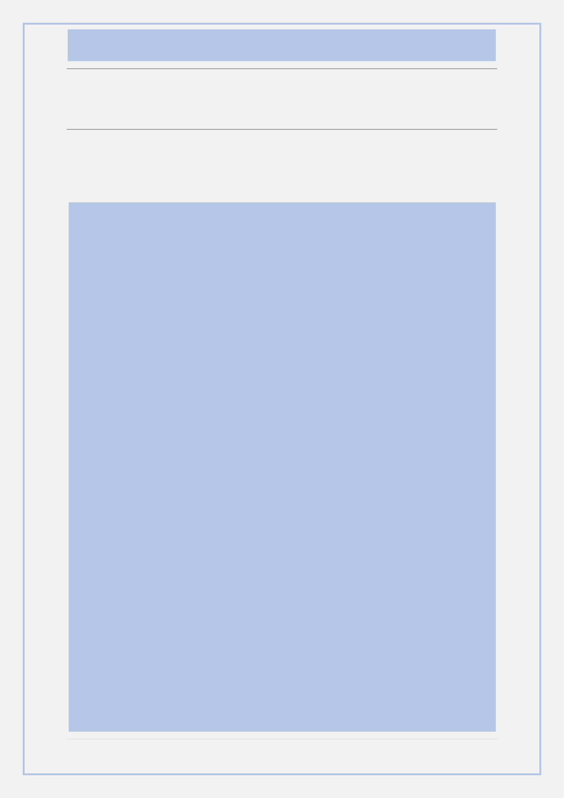
1 | P a g e
NAMESAYER
User Manual
Richard Ng Nisarag Bhatt
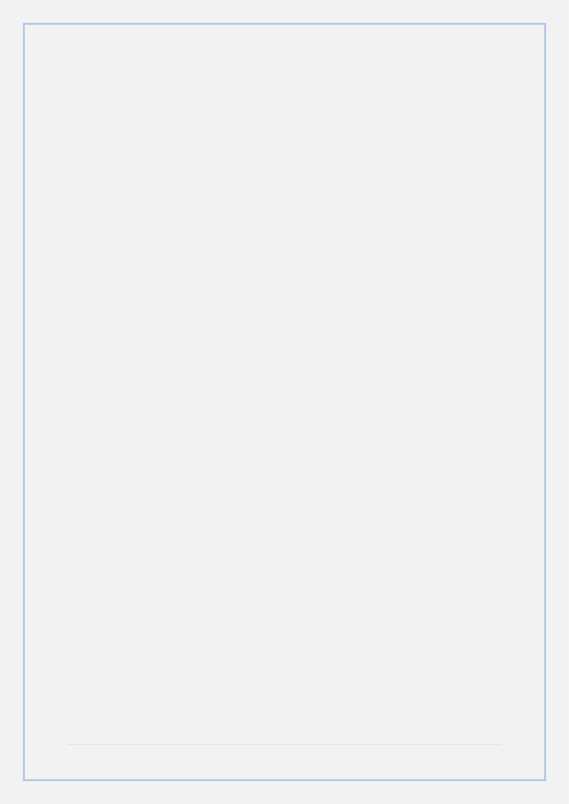
2 | P a g e
Table of Contents
Table of Figures ............................................................................................................................................... 3
Introduction ................................................................................................................................................... 4
First Time Launch ......................................................................................................................................... 4
Main Menu ..................................................................................................................................................... 5
Practice Selection ......................................................................................................................................... 6
Practice Input .................................................................................................................................................. 7
Practice Input Cont.. ....................................................................................................................................... 8
Upload ............................................................................................................................................................ 9
Practice Mode .............................................................................................................................................10
Record ..........................................................................................................................................................11
Record Query...............................................................................................................................................12
Practice Randomise ...................................................................................................................................13
Database .......................................................................................................................................................14
Database Tab 1 ...........................................................................................................................................15
Database Tab 2 ...........................................................................................................................................16
Database Tab 2 Cont.. ................................................................................................................................17
Check Sound .................................................................................................................................................18
Statistics ........................................................................................................................................................19

3 | P a g e
Table of Figures
Figure 1 - NameSayer Main Menu .................................................................................................................. 5
Figure 2 - Practice Selection ............................................................................................................................ 6
Figure 3 - Practice Selection ............................................................................................................................ 7
Figure 4 - Practice Input Error 1 ...................................................................................................................... 7
Figure 5 - Practice Input Error 2 ...................................................................................................................... 8
Figure 6 - NameSayer Upload Figure 7 - TXT Format ............................................................................ 9
Figure 8 - Practice Selection Upload ............................................................................................................... 9
Figure 9 - Practice Mode ...............................................................................................................................10
Figure 10 - Record .........................................................................................................................................11
Figure 11 - Record in Progress ......................................................................................................................11
Figure 12 - Record Query ..............................................................................................................................12
Figure 13 - Attempt Update ..........................................................................................................................12
Figure 14 - Before Randomise.......................................................................................................................13
Figure 15 - After Randomise .........................................................................................................................13
Figure 16 - Database .....................................................................................................................................14
Figure 17 - Database User .............................................................................................................................14
Figure 18 - Database Change Rating Confirmation .......................................................................................15
Figure 19 - Change Rating Screen Updated ..................................................................................................15
Figure 20 - Database Delete Confirmation ...................................................................................................16
Figure 21 - Attempts List Updated ................................................................................................................16
Figure 22 - Concatenated Name Playback ....................................................................................................17
Figure 23 - Concatenated Name Playback 2 .................................................................................................17
Figure 24 - Mic Check ....................................................................................................................................18
Figure 25 - Mic Check In Progress .................................................................................................................18
Figure 26 - Statistics Screen ..........................................................................................................................19
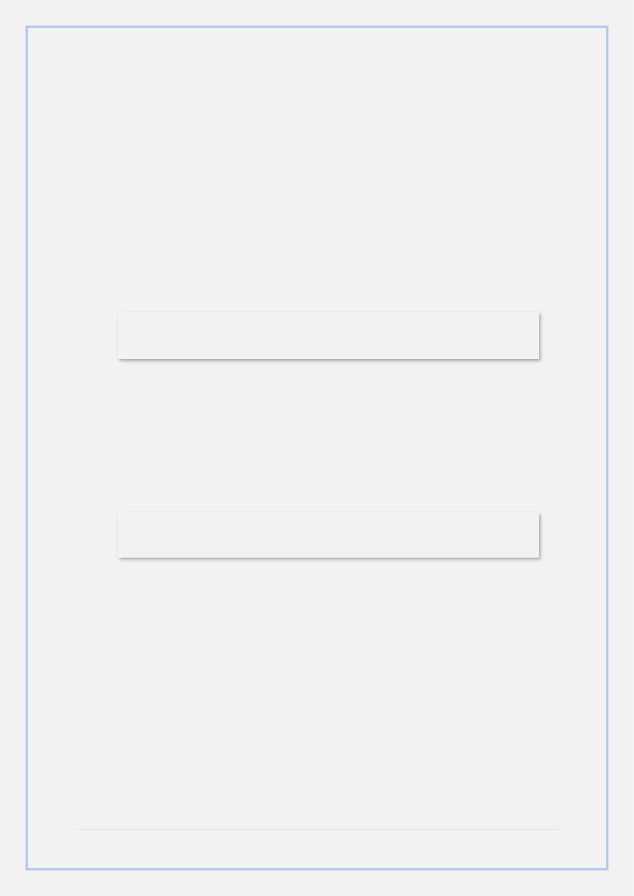
4 | P a g e
Introduction
NameSayer is an application that provides users with a platform to practice unfamiliar names.
This application was designed for the Linux system and is intended for lecturers to aid them in the
pronunciation of student names.
First Time Launch
Before launching NameSayer, please be aware of the following prerequisites that are needed to
run NameSayer:
1. Java Runtime Environment 8 and JavaFX, which can be installed by opening the terminal
and typing the following commands:
2. Working microphone and speakers in order to hear audio playback and perform audio
recording.
3. Finally to run NameSayer, run the following command on terminal:
Upon first launch, NameSayer will create a names folder which will store all recorded names that
the user practices.
sudo apt-get update
sudo apt-get install openjdk-8-jre
sudo apt-get install openjfx
java -jar NameSayer.jar
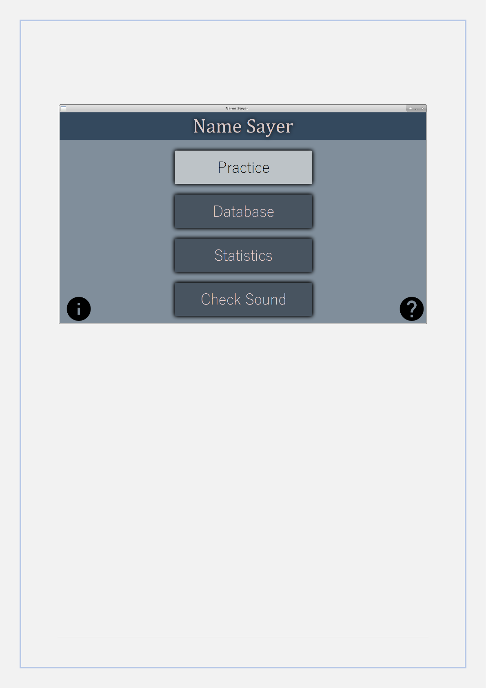
5 | P a g e
Main Menu
Figure 1 - NameSayer Main Menu
Upon starting the application, the user is shown the main menu as shown in Figure 1. This screen
shows four main options for the user to choose from:
• Practice: This option takes the user to the Practice screen, where they get to choose the
names they want to practice
• Database: This option takes the user to the Database screen, which contains all the
names in the database as well as their own recordings.
• Statistics: This option takes the user to the Statistics screen, which contains statistics
about the names the user has practiced.
• Check Sound: This option takes the user to the Mic checking screen, which is used to test
whether their mic is taking input correctly
At the bottom right hand corner there is a help button which will display the user manual.
At the bottom left hand corner there is a info button which displays the creators of this version of
NameSayer.
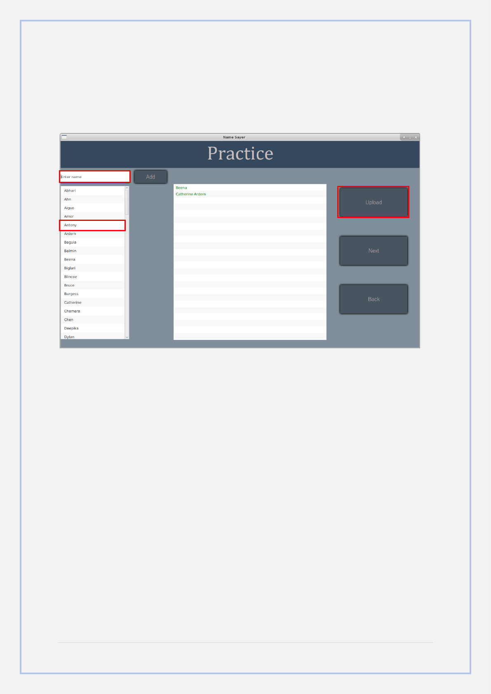
6 | P a g e
Practice Selection
Figure 2 - Practice Selection
The Practice screen is shown when the user clicks on the Practice option in the main menu. The
main functionality of this scene is to allow the user to select what they names they want to
practice.
On the left hand side is a list of all the names in the database, and any combination of these can
be used as a selection.
On the right hand side is the list of all the names selected, currently the user has selected “Beena”
and “Catherine Ardern”
This screen shows four main options for the user to choose from:
• Upload: This option opens a file explorer and allows them to choose a .TXT file which
contains names that they want to practice.
• Next: This option takes the user to the next screen. All names coloured green will also be
transferred to the next screen (Figure 6)
• Back: This option brings the user back to the main menu (Figure 1).
There are three methods for the user to add names that they want to practice, they either type it in
the text-field (1), double click a name (2), which will cause that name to appear in the text-field, or
choose the upload button(3)
1
2
3
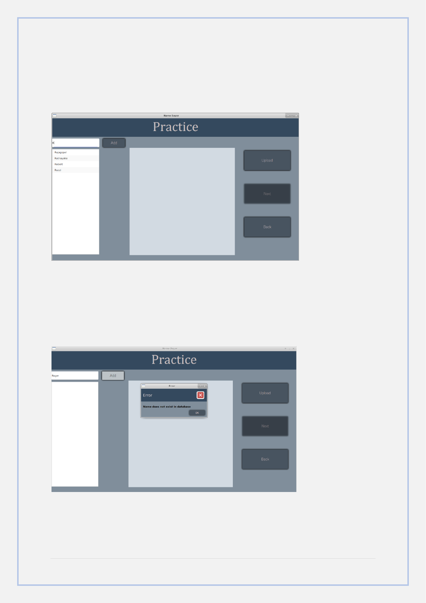
7 | P a g e
Practice Input
Figure 3 - Practice Selection
The figure above shows the dynamic view when the user types in a name to enter. Here the user
as typed the letter “R”, so the application has filtered out the name list to show only names that
start with R. In the example above, the only names in the database that start with R are
“Rajagopal”, “Ratnayake”, “Robert” and “Ruozi”. After typing in a name that they want to practice,
the user can either press the add button or enter.
Figure 4 - Practice Input Error 1
If a user types in a name and tries to enter a name that does not exist in the database, they are
presented with the error message above, letting them know that there is no corresponding name
in the current database provided.
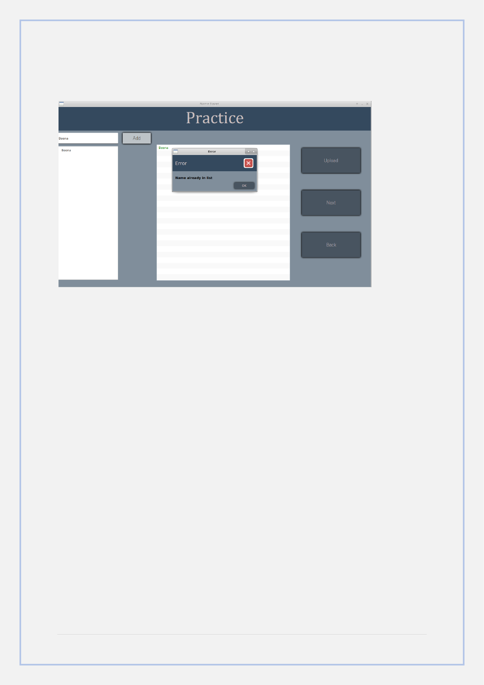
8 | P a g e
Practice Input Cont..
Figure 5 - Practice Input Error 2
In the scenario above, the user has already entered in a name and has selected that name as a
name that they want to practice.
If the user were to try to enter the same name again, then they would be presented with the error
in Figure 5, letting them know that the name has already been selected in the selection list on the
right.
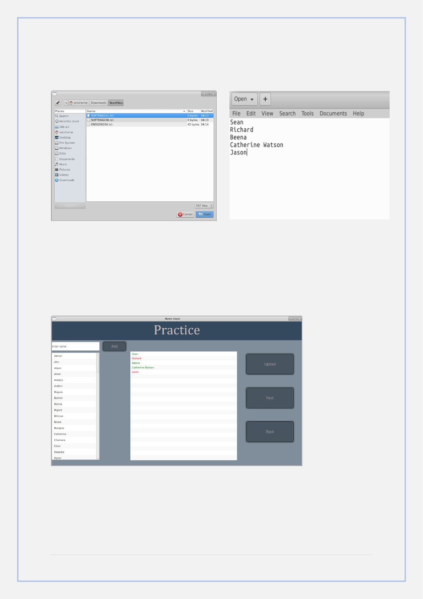
9 | P a g e
Upload
Figure 6 - NameSayer Upload Figure 7 - TXT Format
When the TXT file has been added, the names included in the TXT file will be shown on the right
hand side list view, as shown in Figure 8.
Figure 8 - Practice Selection Upload
Names that are coloured green mean that they are in database and that the user is able to
practice them. Names that are coloured red mean that they are not in the database and will be
removed once the user clicks next to proceed to the next screen.
Upon clicking the upload button in Figure 2, a file explorer window will appear, which allows the user to
choose a TXT file that contains names. The automatic filter means that only TXT files can be selected.
The TXT file must be in a specified format as shown in Figure 7.
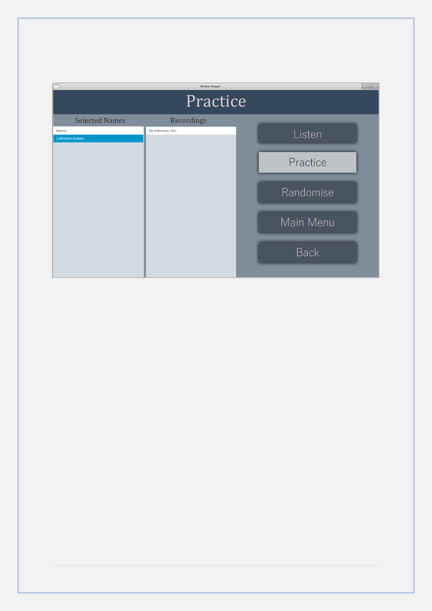
10 | P a g e
Practice Mode
Figure 9 - Practice Mode
From Figure 2, if we press the “Next” button, then we will end up on this screen, as shown above
the names that were selected are now also on this screen. The main functionality in this screen is
to provide the user to listen to and practice names. Currently since the user has not practiced
“Catherine Ardern”, the Recordings table shows “No Attempts Yet!”
This screen shows five main options for the user to choose from:
• Listen: This option allows the user to listen to either the database name selected, or any
names that have recorded. This button will be disabled unless a name has been selected
• Practice: This option opens a new window, and allows the user to record the name that
they have selected. (Refer to Figure 10). This button will be disabled unless a name has
been selected
• Randomise: This option randomises the selected name list.
• Main Menu: This option takes the user to the Main Menu.
• Back: This option goes back to the Practice Selection screen – this allows the user to add
more names if they have missed any.
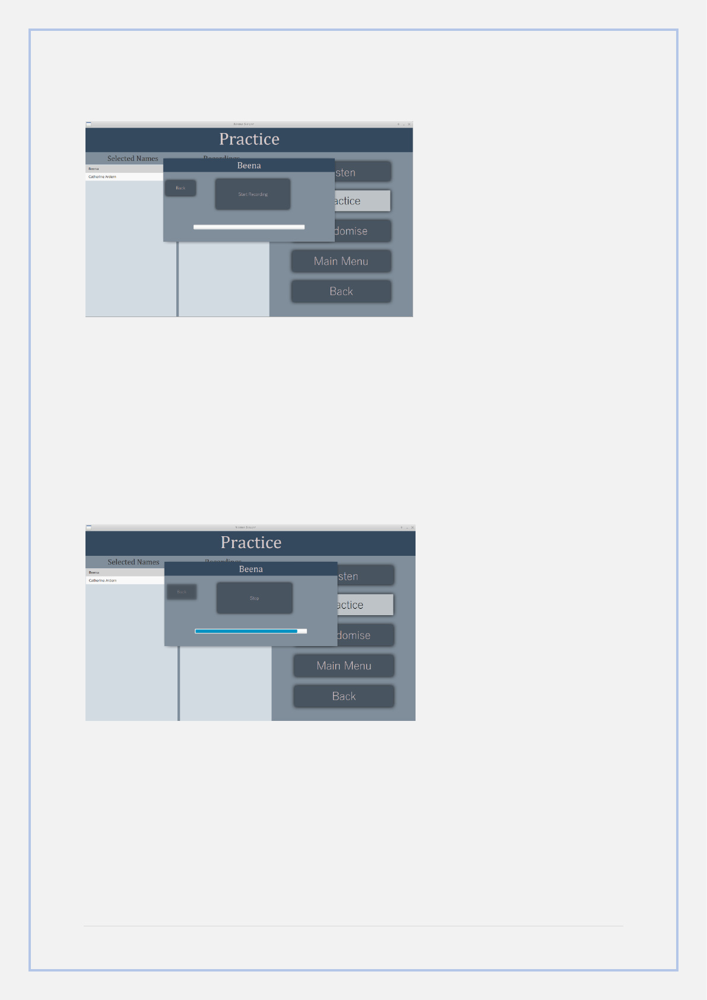
11 | P a g e
Record
Figure 10 - Record
Upon clicking Practice on Figure 6, the window above will be shown, since the user has selected
“Beena”, this is reflected on the new window, as the top title shows “Beena”.
This screen has two main options to choose from:
• Start Recording: This option allows the user to start the recording for their pronunciation
of “Beena” and starts the progress bar
• Back: This option closes the Record screen and goes back to the Practice Mode screen,
refer to (Figure 9)
Figure 11 - Record in Progress
When the user clicks “Start Recording” the progress bar shows how long the user can record for.
Once the user has clicked the “Start Recording” button, the button changes to a “Stop” button as
shown in Figure 11. This stops the recording prematurely, and gets the audio of what the user has
currently said. When the progress bar is fully filled, or the user has clicked the “Stop” button, the
scene will transition to Figure 12.
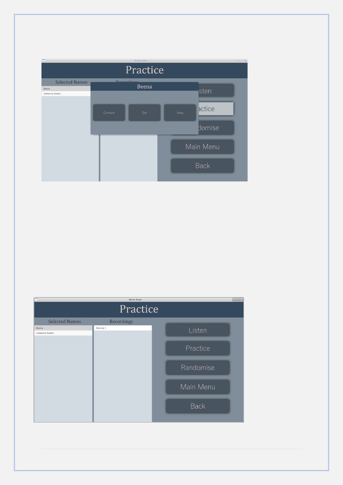
12 | P a g e
Record Query
Figure 12 - Record Query
The Record Query window appears when the user has finished their recording, here they have
three options:
• Compare: This option plays first the database version of the name, and then the user
recording. This allows the user to compare their own recording that they made to the
database version. The user is also allowed to stop the audio playback whenever they want
by clicking the button again.
• Keep: This option saves the recording they made as an “Attempt”, and the attempt will be
shown in the “Recording list” (Refer to Figure 13)
• Exit: Closes the Record window without saving the recording.
Figure 13 - Attempt Update
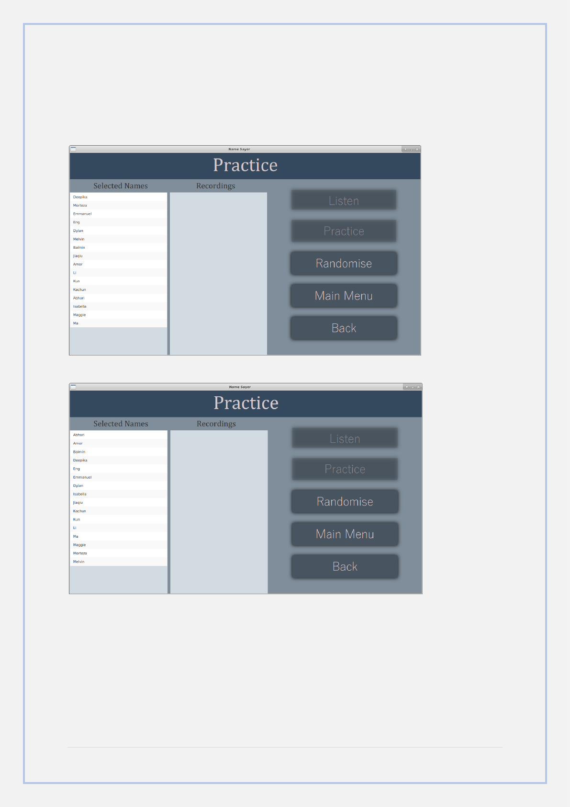
13 | P a g e
Practice Randomise
The two figures below show what happens when the user presses randomise on a list of names.
Figure 14 - Before Randomise
Figure 15 - After Randomise

14 | P a g e
Database
Figure 16 - Database
Upon clicking the “Database” button on the main menu (Figure 1), the user will be presented with
the screen above. The main functionality of the Database screen is to provide the users with
access to all the recordings that they have made, as well as allowing the user to rate the database
names.
There are two tabs on the left hand side:
• Database (Tab 1): This tab shows the list of all the names in the database, and provides
options to listen to these names as well as change the rating of said name (Figure 16).
The Back button is used to go back to the main menu.
• User (Tab 2): This tab shows the list of all user recordings, as well as the custom names
that they have selected to practice. There are options to listen as well as delete these
names (Figure 17). The Back button is used to go back to the main menu.
Figure 17 - Database User
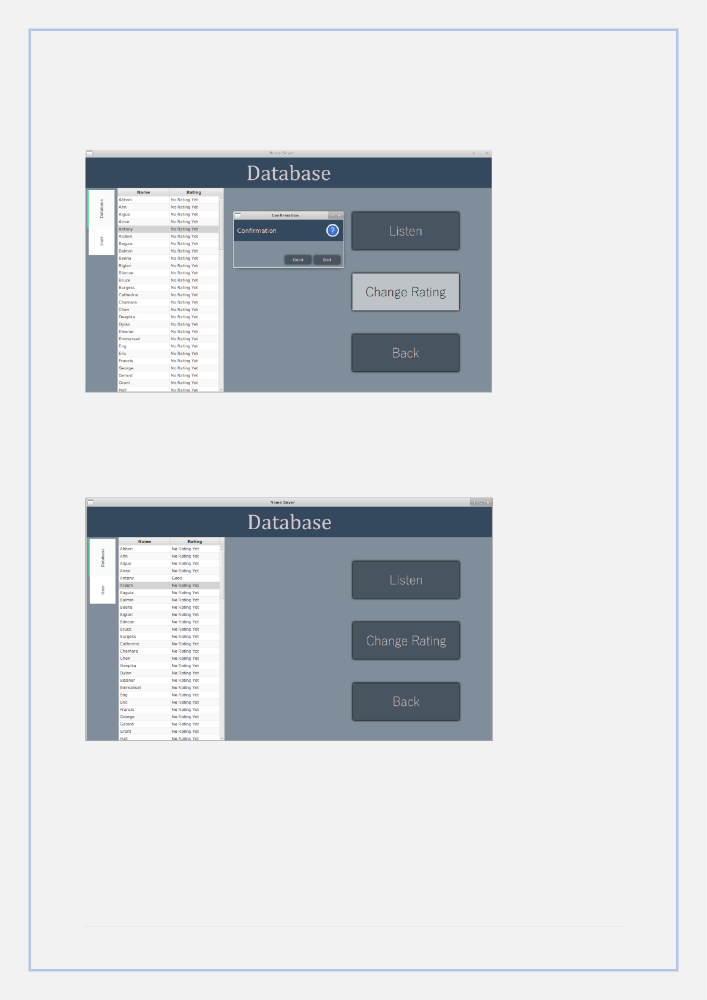
15 | P a g e
Database Tab 1
Figure 18 - Database Change Rating Confirmation
By clicking the Change Rating button, it allows the user to change the rating of the database name
that they have selected. When the button is pressed, it will open a confirmation screen, and the
user can select either good or bad quality for the rating.
Figure 19 - Change Rating Screen Updated
If the user clicks the Good button, then this change is reflected on the list, with the “Rating”
column being changed. The name is also stored in a TXT file called “Good Quality Recordings”.
If the user clicks the Bad button, the change is also reflected on the list, with the “Rating” column
being changed. The name is stored in a TXT file called “Bad Quality Recordings”.
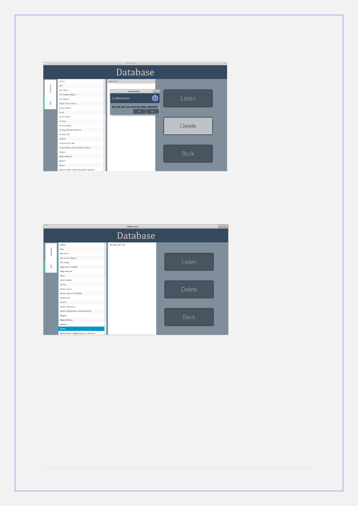
16 | P a g e
Database Tab 2
Figure 20 - Database Delete Confirmation
Like the first tab, the second user tab also allows users to listen their recordings, however there is
also the option to delete user attempts as shown in Figure 20. This will delete the attempt for that
particular name and will also delete the file itself in the user recordings folder.
Figure 21 - Attempts List Updated
If the user has confirmed their deletion by pressing “Yes”, then the attempts list will be updated
and if there are no current attempts for that particular name, the list will display “No Attempts
Yet!”.
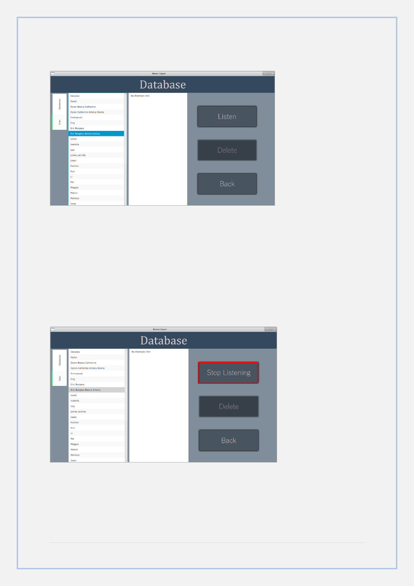
17 | P a g e
Database Tab 2 Cont..
Figure 22 - Concatenated Name Playback
The user also has the ability to listen to the user recordings of the concatenated names as well as
the “database version” of these concatenated names.
To listen to the database version, the user selects the name on the left hand side and clicks the
“Listen Button” as shown in Figure 22. The user will hear the database concatenation of “Eric-
Burgess-Beena-Antony”.
To listen to the user recording version, the user can just select each attempt on the right hand list
and click listen.
Figure 23 - Concatenated Name Playback 2
Once the user has clicked the “Listen” button, the button will change to “Stop Listening” so that the
user can stop audio playback whenever they want to. This is especially useful when the name that
they are currently listening to is extremely long.
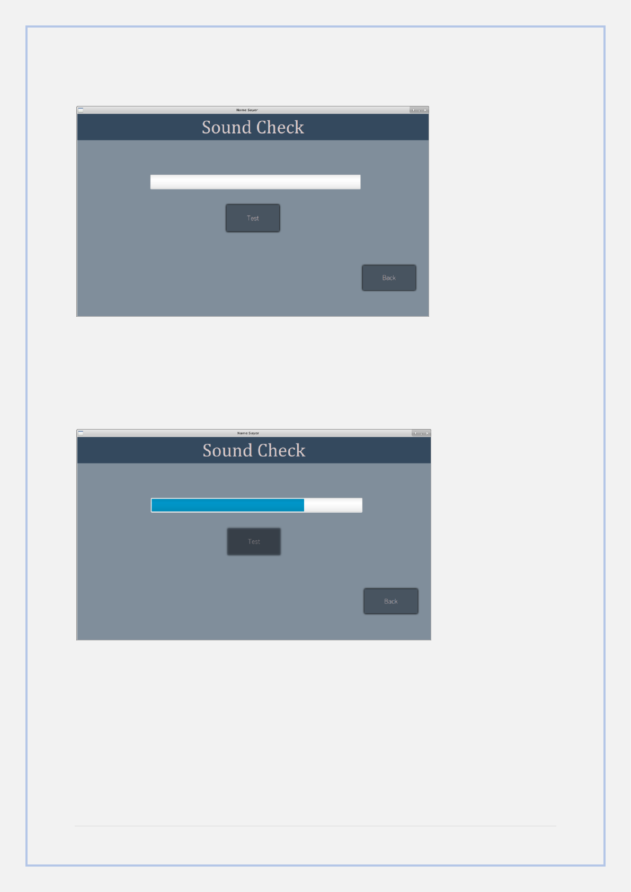
18 | P a g e
Check Sound
Figure 24 - Mic Check
Upon clicking the “Check Sound” button on the main menu (Figure 1), the user will be presented
with the screen above. The main purpose of this screen is to check if the users mic is correctly
working. Once the user clicks “Test”, the user can speak into their mic and the mic level will be
reflected on the bar as shown on Figure 25.
Figure 25 - Mic Check In Progress
The mic level bar is dynamically changing and will either go up or down depending on how loud
the user speaking into the mic is.
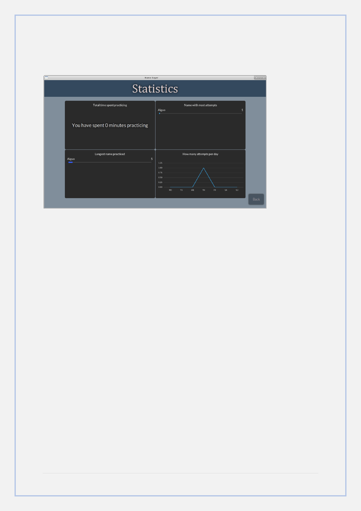
19 | P a g e
Statistics
Figure 26 - Statistics Screen
Upon clicking the “Statistics” button on the main menu (Figure 1), the user will be presented with
the screen above. The statistics screen displays the following information:
• Total time spent practicing
• Names with the most attempts
• Longest name practiced
• Number of attempts per day
This information is dynamic and will change as the user practices his/her names, these statistics
are also saved upon closure of the application.